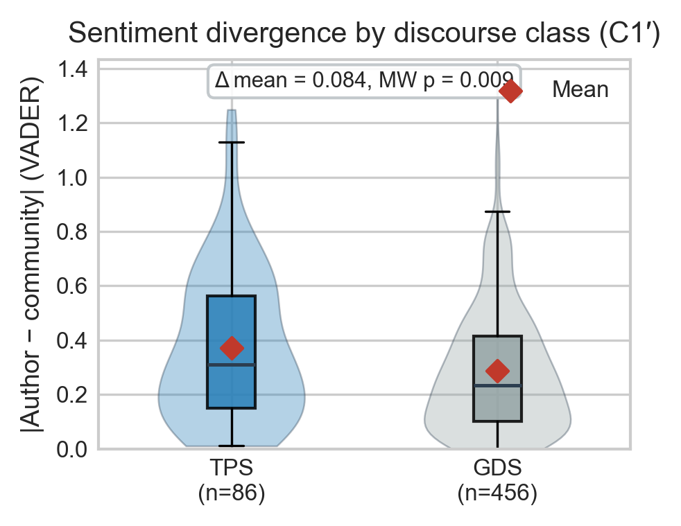

Software-update discussions on Reddit are not monolithic — they split into Technical Problem-Solving (TPS) and General Discontent (GDS). We show this split is learnable from text, and that it correlates with how the emotional gap between the original poster and the community evolves over the thread. Title-level sentiment alone is not enough; thread structure matters.
The Research
Every software release triggers a wave of Reddit threads. Some are constructive debugging sessions; others are venting. We formalize this as a binary discourse classification task and study how author and community emotions diverge in each.
Threads centered on a concrete technical issue: reproduction steps, logs, version pinning, workarounds, and resolution. The OP typically starts neutral-to-negative and the community converges on a fix. Example flavor: “After updating to 6.8, my Wi-Fi driver fails to load — here’s dmesg.”
Threads dominated by frustration, opinion, or meta-complaints about a product or vendor rather than a solvable defect. Emotional language, fewer actionable details, pile-on dynamics. Example flavor: “This update is the worst thing they’ve ever shipped. Who approved this UI?”
Key Finding
Across the 542 labeled threads, the original poster is more negative than their community far more often in TPS threads than in GDS threads — the person with the broken system is more frustrated than the crowd helping them, while in discontent threads the crowd matches the OP’s mood.
Robustness: restricting to a software/dev/platform subreddit allowlist (Tier-A, n≈304) the effect persists — Δ = 0.105, Mann–Whitney p = 0.0125. Author mean sentiment is also markedly lower in TPS (0.01 vs 0.19, d = −0.50, p < 0.001), while community mean sentiment barely differs — the divergence comes from the author’s side.

Model Benchmark
Same pipeline for all models: 542 verified labels, GDS undersampled to 175 with all 86 TPS kept (261 rows), stratified 70/15/15 split. We report imbalance-aware metrics on the held-out test set.
| Model | Test acc. | F1 (TPS) | F1 (macro) | Recall (TPS) |
|---|---|---|---|---|
| Naive Bayes · TF-IDF | 0.700 | 0.571 | 0.670 | 0.615 |
| BERT · fine-tuned, weighted CE | 0.650 | 0.563 | 0.635 | 0.692 |
| VADER rule · technical-first | 0.500 | 0.545 | 0.495 | 0.923 |
TF-IDF + Naive Bayes leads on accuracy and macro-F1 in this run; fine-tuned BERT is second. The VADER rule baseline catches nearly all TPS threads (recall 0.92) but floods them with false positives (precision 0.39) — exactly the lexicon failure mode RQ4 documents. 5-fold CV and Tier-A robustness checks preserve the ordering (NB macro-F1 0.659 full → 0.703 Tier-A).
Trajectory Explorer
Each thread is split into two role-separated streams — the author (opening post + every OP comment) and the community (everyone else) — scored per event with VADER and ordered in time. Below: the top-10 threads by comment volume from two ReleaseTrain cohorts. Hover any line for the post, subreddit, and exact score.
Per-thread, comment-index view of the same role-separated design: orange = author stream, blue dashed = community stream, x-axis = chronological comment number. Click any chart to enlarge.
Live Demo
These panels fetch fresh Reddit slices from the ReleaseTrain API on every load and run VADER sentiment scoring client-side — the same role-separated trajectory construction used in the paper, applied to whatever the community is discussing today.
Loading ReleaseTrain data and VADER…
Three merged API slices (engagement pool, minScore ≥ 0.5, maxScore ≤ 0.5; up to 500 posts each), top 5 per subreddit by comment count. One chart per thread: VADER compound vs chronological comment index. Click a point or the header link to open the Reddit thread.
Loading subreddit list and class slices…
Up to 6 charts per subreddit: up to 3 from the minScore ≥ 0.5 cohort and 3 from maxScore ≤ 0.5 (minComments = 3, 500 rows each). The dropdown lists every subreddit in the ReleaseTrain meta index — some have no rows in the current sample; pick another or refresh.
Dataset & Methods
The corpus, annotation protocol, and evaluation pipeline are fully documented so results can be reproduced end-to-end from the public ReleaseTrain API.